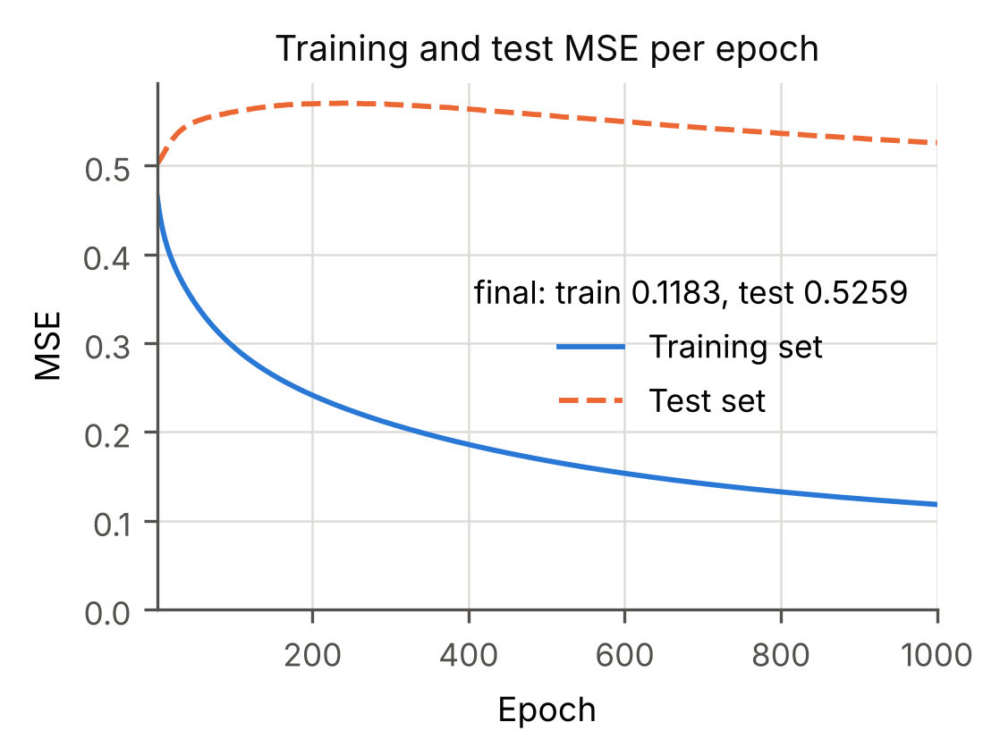
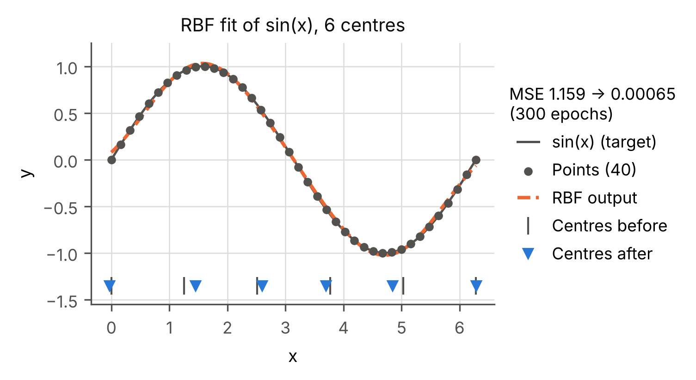

Name: Andreas Evagorou AM: 1134609
The Selwood data set has 31 molecules, each described by 53 numerical descriptors (charges, surface areas, moments, log P, ...) and a biological activity Y between −1 and 1.84. The task is regression: predict Y from the 53 features, training on 21 molecules and testing on the other 10.
An RBF network has one hidden layer of Gaussian neurons. Each hidden neuron h has a centre Rh in the input space and a width σh, and responds strongly only to inputs near its centre; the output is a weighted sum of these responses plus a bias. The MLP of Assignment 1 instead uses sigmoid neurons, each of which splits the whole input space with a hyperplane, so every neuron reacts to every input. RBF neurons are therefore local: the hidden layer measures how similar a molecule is to a few prototypes, the centres can be placed by clustering before training, and the output is linear in the hidden responses.
The problem is hard because there are far fewer patterns than dimensions: 21 points in a 53-D space. Any two molecules are far apart, and even 3 centres already give 3×53 + 3 + 3 + 1 = 166 trainable numbers for 21 targets, so overfitting is the main danger, and with only 10 test molecules a single badly predicted molecule changes the test error a lot. For that reason every setting is also run on 5 more random splits and compared by its mean, and two simple reference models show what “good” means on this data.
Pre-processing. The two activities written “< −1*” (K17, D30) are read as −1, the lowest value in the data; the true activity is below that, but −1 is the closest value I can use. The 31 molecules are split at random into 21 training and 10 test molecules with the seed randomSeed (42 gives the test set D30, J19, J1, A10, F15, G9, I26, B8, E24, B28). The features have very different scales, and the Gaussian uses the Euclidean distance, so every feature is min-max scaled to [0, 1] with the minimum and range of the training set only; the test set uses the same numbers and is not clipped (5% of its values fall slightly outside [0, 1]). A feature that is constant in the training set would become 0 (no division by zero). Y is not scaled.
Centres. The initial centres come from my own k-means (k-means++ start, up to 100 rounds, seeded) on the normalised training molecules, so every centre starts in a dense part of the data. The alternative, K random training molecules (centresInit samples), gave a much worse start: for K = 8 the mean squared distance of the molecules to their nearest centre is 0.77 with k-means and 2.47 with samples.
Choosing K, σ, learning rates and epochs. My first try, K = 8 and σ = 1, fitted the training set almost exactly (MSE 0.010) but gave test MSE 0.464. I therefore chose every setting by cross-validation on the 21 training molecules only (cv.py; the test set is never read): 5-fold CV repeated 4 times with new folds, because with 21 molecules a single 5-fold split is very noisy. In every fold the scaler, the feature choice, the k-means centres and the network are fitted on the 4 training folds only. A coarse grid (K = 3, 5, 8; σ = 0.5–3; 5, 10, 20 or all 53 features; 2000 epochs) and then a fine grid (K = 5–10, σ = 0.75–1.5, learning rates ×0.25–×2, 250–4000 epochs) gave the lowest CV error, 0.406 ± 0.055, for K = 10, σ = 1.0, rates 0.0025 / 0.00025 / 0.000125 and 1000 epochs. Settings with the same amount of training (rate × epochs, e.g. ×4 rates for 250 epochs) score the same (0.406), and more training raises the CV error (0.440 after 4000 epochs): stopping early is what regularises the network. For comparison, always predicting the training mean has CV error 0.643. An earlier, single 5-fold CV had pointed to K = 3, σ = 2; the repeated CV shows that this depended on the folds (0.612 ± 0.165, 29th of 53 coarse settings), so I replaced it. σ = 1 agrees with the hint of the notes (L7) that the width should be larger than the distance between neighbouring inputs but smaller than the input space: a molecule is on average 0.52 from its nearest centre, and the centres are 3.0 apart on average.
Feature selection. 53 descriptors for 21 molecules is the real limit, so I also tried keeping only the m descriptors with the largest |correlation| with Y (features.py, optional parameter numFeatures), chosen on the training folds only. The best reduced setting (20 features, K = 5, σ = 3) reached CV 0.455, no better than all 53 features (0.452 in the same grid), so the baseline keeps all features; Table 2 shows its test score.
Algorithm (variable centres, L7 slides 58–59). One epoch presents all 21 training molecules once, in a new random order; the updates are online, after every pattern:
normalise features with training statistics; centres R_h = k-means
sigma_h = sigmas; w_h, b = uniform in [-1, 1] (seeded)
for epoch = 1 .. maxIterations:
for (x, t) in shuffled training set:
phi_h = exp(-||x - R_h||^2 / (2 sigma_h^2)) for every h
y = b + sum_h w_h phi_h; eps = t - y
compute the changes of w, b, R, sigma from the OLD values
apply all changes together
record MSE on training and test set
Formulas. Forward pass: φh(x) = exp(−‖x − Rh‖² / 2σh²), y = wb + Σh whφh. Error of one pattern ε = t − y, E = ½ε². Updates, gradient descent on E with three learning rates:
wh′ = wh + ηwεφh, wb′ = wb + ηwε, Rhi′ = Rhi + ηRεwhφh(xi − Rhi)/σh², σh′ = σh + ησεwhφh‖x − Rh‖²/σh³
The reported error is the mean squared error over a set, MSE = (1/N)Σp(tp − yp)², plus RMSE = √MSE and R² = 1 − Σ(t − y)² / Σ(t − t̄)² on the test set. Termination: a fixed number of epochs, maxIterations = 1000, chosen by the CV above (early stopping on the test error would use the test set for a training decision).
Difficulties. (1) Overfitting with many narrow Gaussians, handled by choosing K, σ, the rates and the number of epochs by repeated cross-validation. (2) The σ update divides by σ³, so a width could in principle reach 0 or become negative; I keep every σ ≥ 0.001 (not in the notes; it never triggered in the reported runs). (3) Eqs 8–9 must use the old wh, not the one just changed by eq 6, so all changes are computed first and then applied. (4) The assignment's parameter file has no option for the split, the centre method or feature selection, so I added three optional parameters: centresInit (kmeans | samples), kmeansIterations (default 100) and numFeatures (default 0 = all); the split uses randomSeed.
Python 3 with numpy (matplotlib only for the plots), one file per role: parameters.py (reads and checks parameters.txt from the current folder), prepare_data.py (split and centres → training.txt, test.txt, centerVectors.txt), data.py (file reading), normalise.py, kmeans.py, rbf.py (class RBF: Gaussians, forward pass and the update of eqs 6–9), training.py (epochs and MSE), metrics.py, results.py (the three output files), main.py, plots.py, experiments.py, cv.py (cross-validation), features.py (feature selection) and reference.py (mean and least-squares linear reference models).
Checking correctness. 212 unit tests in code/tests (pytest). The most important compares the four update formulas with numerical derivatives of E = ½ε² (finite differences) for w, b, R and σ, and checks one hand-computed step to confirm the old values are used. Learning rate 0 for the centres (or σ) leaves them unchanged, and the same seed gives the same run. As a sanity check on a one-variable function (Figure 1), a network with 6 centres learns sin(x) on 40 points in [0, 2π] (rates 0.05 / 0.01 / 0.01, 300 epochs): the training MSE drops from 1.159 to 0.00065, the curve matches the target, and the centres move during training towards the extremes of the curve (1.26 → 1.46 near the peak at π/2, 5.03 → 4.85 near the trough at 3π/2).

Figure 1. Sanity check: RBF network with 6 centres trained on sin(x).
Table 1 gives the baseline parameters so the run can be repeated. Figure 2 plots results.txt (training and test MSE per epoch), and Figure 3 compares the predicted with the true activity of each test molecule. Table 2 changes one setting at a time and runs every setting, and the two reference models, both on the seed 42 split of the report and on 5 other random 21/10 splits (seeds 1–5). Each split has its own normalisation, feature choice and k-means centres. Settings are compared by their mean over the 5 splits, because one 10-molecule test set is too noisy to rank them.
| Parameter | Value | Parameter | Value |
|---|---|---|---|
| numHiddenLayerNeurons (K) | 10 | maxIterations (epochs) | 1000 |
| numInputNeurons / numOutputNeurons | 53 / 1 | randomSeed | 42 |
| learningRates (w, R, σ) | 0.0025 / 0.00025 / 0.000125 | centresInit / numFeatures | kmeans / 0 (all) |
| sigmas (initial, all neurons) | 1.0 | Split | 21 train / 10 test |
Table 1. Baseline parameters (code/parameters.txt), chosen by cross-validation.
On the seed 42 split the baseline (about 1 second) ends with training MSE 0.118 and test MSE 0.526, RMSE 0.725, R² 0.33. Over the 5 other splits it reaches test RMSE 0.598 ± 0.136, R² 0.37 ± 0.18, the best mean of all settings tried by CV. The widths stay close to 1.0 (0.95–1.00), since their learning rate is small.

Figure 2 (left). Training and test MSE per epoch (results.txt). Figure 3 (right). Actual vs predicted Y for the 10 test molecules, with y = x.
In Figure 2 the training error falls steadily from 0.46 to 0.12. The test error is lowest after the first epoch (0.50), rises to 0.57 at epoch 250 and comes back down to 0.53 at the end. On this split the extra training fits the 21 training molecules better without improving the test molecules. In Figure 3 the predictions keep the right order for most molecules (J19, J1 low; B8, B28 high) but are pulled towards the mean. The largest errors are D30 (true −1, predicted 0.66) and E24 (1.41 vs 0.60).
| Setting (one change from the baseline) | Seed 42 | 5 random splits (mean ± std) | ||
|---|---|---|---|---|
| Test RMSE | Train MSE | Test RMSE | Test R² | |
| Baseline: K 10, σ 1.0, rates ×1, 1000 epochs | 0.725 | 0.194 | 0.598 ± 0.136 | 0.37 ± 0.18 |
| K = 3 | 0.751 | 0.345 | 0.601 ± 0.148 | 0.36 ± 0.21 |
| K = 5 | 0.732 | 0.284 | 0.593 ± 0.141 | 0.38 ± 0.21 |
| K = 15 | 0.654 | 0.093 | 0.592 ± 0.136 | 0.38 ± 0.19 |
| σ = 0.5 | 0.834 | 0.186 | 0.682 ± 0.142 | 0.17 ± 0.24 |
| σ = 2.0 | 0.698 | 0.301 | 0.600 ± 0.187 | 0.36 ± 0.29 |
| Rates ×4 (0.01 / 0.001 / 0.0005) | 0.692 | 0.076 | 0.590 ± 0.149 | 0.38 ± 0.22 |
| Rates ×8 (0.02 / 0.002 / 0.001) | 0.691 | 0.032 | 0.592 ± 0.132 | 0.38 ± 0.19 |
| Fixed centres (ηR = 0) | 0.737 | 0.238 | 0.606 ± 0.130 | 0.36 ± 0.17 |
| 20 selected features, K 5, σ 3.0 (best by CV) | 0.738 | 0.367 | 0.605 ± 0.188 | 0.35 ± 0.29 |
| Reference: predict the training mean | 0.944 | 0.680 | 0.792 ± 0.121 | −0.10 ± 0.14 |
| Reference: least-squares linear fit (53 features) | 1.174 | 0.000 | 1.260 ± 0.580 | −2.60 ± 3.30 |
Table 2. Every setting on the seed 42 split and on the random splits 1–5 (population std). Rates are multiples of the baseline rates. Full output: code/experiments/summary.txt.
| Split (randomSeed) | 1 | 2 | 3 | 4 | 5 | Mean ± std |
|---|---|---|---|---|---|---|
| Test RMSE, baseline (variable centres) | 0.417 | 0.814 | 0.538 | 0.680 | 0.541 | 0.598 ± 0.136 |
| Test RMSE, fixed centres | 0.438 | 0.814 | 0.538 | 0.684 | 0.556 | 0.606 ± 0.130 |
| Test RMSE, predict the training mean | 0.692 | 0.985 | 0.705 | 0.886 | 0.692 | 0.792 ± 0.121 |
| Test R², baseline | 0.62 | 0.06 | 0.40 | 0.41 | 0.36 | 0.37 ± 0.18 |
Table 3. The baseline, fixed centres and the mean predictor on each random split.
Compared with the reference models. The RBF network is better than predicting the mean on every split (RMSE 0.598 vs 0.792 on average, and 0.725 vs 0.944 on seed 42), so R² ≈ 0.37 is a real gain. A plain linear fit is far worse (R² −2.6): with 53 features and 21 molecules least squares has infinitely many exact solutions and fits the training set perfectly, noise included. The RBF network uses the 53 features only through distances to a few centres, which is a much smaller model.
Overfitting and the generalisation gap. These are two different things. The generalisation gap is the difference between the training and the test error (0.12 vs 0.53 on seed 42). It is always there with 21 training molecules, because the test molecules are far from the training ones: 6 of the 10 are more than 1.3 from every centre. Overfitting means that more fitting makes the test error worse. That shows in the CV, which rises when training goes on longer than about 1000 baseline epochs, and in Figure 2, where the test error is lowest after the first epoch. Over the splits it is mild: rates ×4 or ×8 push the training MSE down to 0.08–0.03 but leave the test RMSE unchanged (0.590–0.592). So fitting the training set harder does not help, and the stopping point chosen by CV is a form of regularisation.
Effect of K, σ and the learning rates. Averaged over the 5 splits, K = 3, 5, 10 and 15 all give a test RMSE of 0.59–0.60. The differences (≤ 0.01) are far below the spread between splits (std ≈ 0.14), so K does not matter much once training stops early; more centres only lower the training error. On the seed 42 split alone K = 15 looks best (0.654), which shows how misleading a single split is. σ matters more: σ = 0.5 makes the Gaussians too narrow for test molecules that lie 1–2 away from the centres (RMSE 0.682, R² 0.17). σ = 2.0 is as good on average but varies more between splits (std 0.187).
Fixed vs variable centres. Moving the centres lowers the training MSE (0.194 vs 0.238) and gives a slightly lower test RMSE on average (0.598 vs 0.606). The gain is smaller than with the old, longer training. With small rates and 1000 epochs the centres move only a little from where k-means put them.
Feature selection. Keeping the 20 descriptors most correlated with Y on the training set gives the same mean (0.605) but varies more (std 0.188; split 2 R² −0.20). With 21 molecules the correlations themselves are noisy, so the chosen subset changes from split to split. Since CV did not prefer it, the baseline keeps all 53 features.
Stability. The test RMSE goes from 0.42 (split 1) to 0.81 (split 2) for the baseline, and by as much for every other setting, so the split matters more than any parameter. Seed 42 is one of the harder splits: even the mean predictor has RMSE 0.944 on it, against 0.792 on average. On split 2 R² is close to 0 for every model: its 21 training molecules do not represent the 10 test ones.
Worst molecules. D30 is one of the two “< −1” molecules: its real activity is unknown below −1, and its nearest training molecules (D23, E20, B3) are all active (0.23–1.40), so a local, distance-based network cannot predict a very low value for it. The other inactive molecule, K17, is in the training set but far from D30 (distance 2.76, about the median distance between two molecules). E24 is almost identical in features to the training molecule E20 (distance 0.16, the closest pair in the data) but much more active (1.41 vs 0.89), so the network predicts close to E20. These are limits of the data rather than of the training.
What I would change. I would use leave-one-out cross-validation over all 31 molecules instead of one 21/10 split, try a weight penalty instead of early stopping, and select features by a method that uses the network itself (e.g. backward elimination inside the CV) rather than single correlations.
An RBF network with 10 Gaussian neurons, trained with variable centres for 1000 epochs at small learning rates (all settings chosen by cross-validation on the training set only), reaches test RMSE 0.598 ± 0.136 and R² 0.37 ± 0.18 over 5 random splits, and RMSE 0.725 (R² 0.33) on the seed 42 split. It is clearly better than predicting the mean (RMSE 0.792) and than a linear fit (1.260). With 21 molecules in 53 dimensions the limits are the data and the split rather than K or the learning rates. Stopping the training early matters more than the number of centres, and learning the centres or selecting features changes little.
I used an AI assistant (Claude) to help write and test the code, run the experiments and word this report. The design choices are mine, every number comes from the submitted code, and I can explain all of it.